Servicios.
En CASTABARBER trabajamos con citas para brindar el tiempo y asesoramiento necesario a cada cliente las cuales pueden ser solicitadas telefónicamente al WhatsApp o por cualquiera de nuestras redes.
Todos nuestros servicios incluyen una bebida de cortesía (Café, Cerveza o Whisky).
Solicita turnoCorte de cabello
Corte de cabello con lavado incluído y terminaciones a navaja.
Arreglo de barba
Arreglo de barba con fomento caliente y frío. Terminaciones a navaja y productos para el cuidado de tu piel y barba.
Afeitado Italiano (Clásico)
Afeitado italiano con dos toallas caliente, una fría, aceites aromáticos y productos para el cuidado de la piel.
Capas largas barrido lateral.
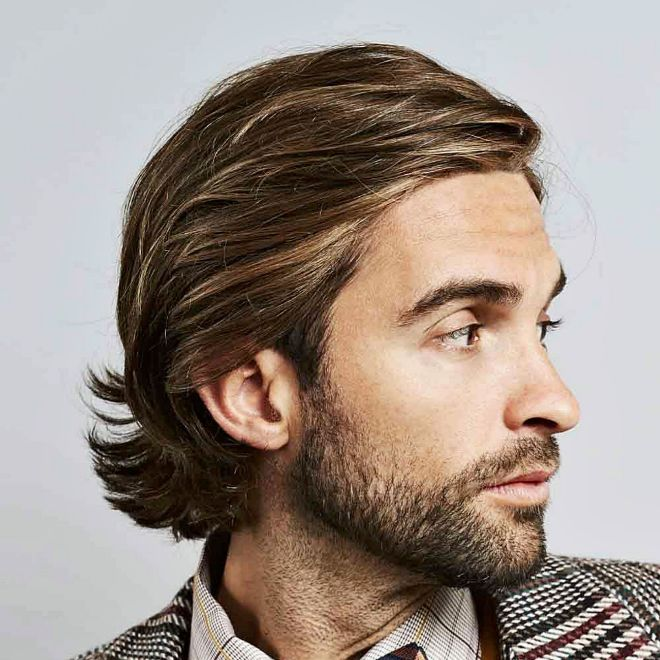Un corte de tazón es un básico de los cortes de cabello de hombres y los de longitud media están a la última; incluso ligeramente desfilados. El corte deja la parte superior más larga que los lados y va hacia atrás con una línea recta siguiendo la forma de la cabeza.
Tazon largo.
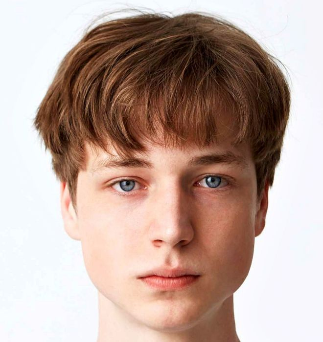Los cortes de pelo largo con flequillo funcionan muy bien, especialmente para cabellos lisos. Aporta un toque vanguardista y distinguido. Y más aún si llevas la raya a un lado, muy de tendencia y lo peinas hacia atrás. De esta forma los mechones no te caerán sobre la cara.
Degradado cepillado.

El corte de pelo de desvanecimiento medio funciona para cualquier estilo en la parte superior. Como tal, si se desea crear un aspecto de cabello voluminoso y que llame la atención, es mejor optar por un desvanecimiento cepillado. Además de quedar muy elegante y atractivo, también es uno de los mejores cortes de cabello para hombres con cabello fino. Y con barba corta encaja a la perfección.
Pompadur en capas.
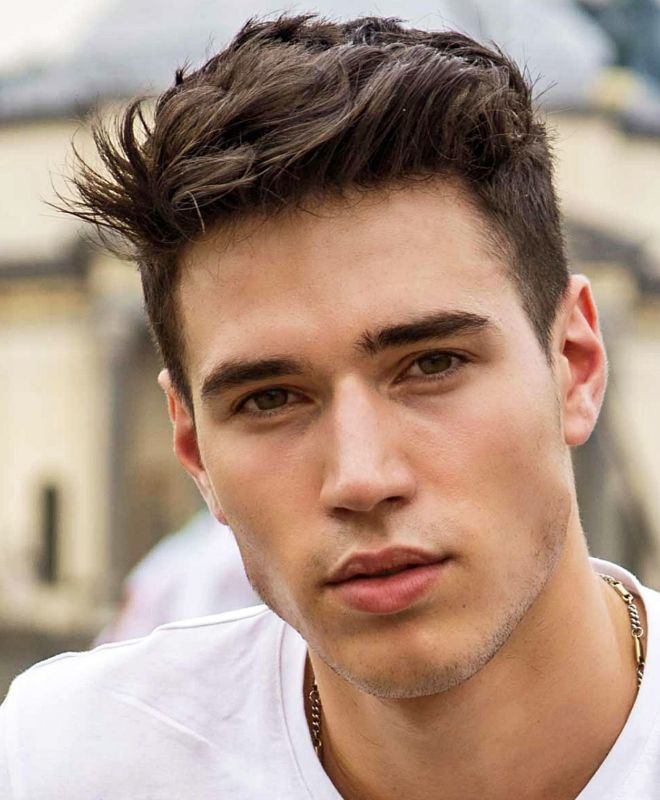El pompadur en capas hace que el copete se vea más contemporáneo sobre todo si se corta el cabello en capas en diferentes niveles. Da un aire más desenfadado y ayuda a lograr el volumen requerido mucho más fácilmente; por lo que es ideal si no se tiene un cabello muy espeso.
Taper fader de pelo rizado.
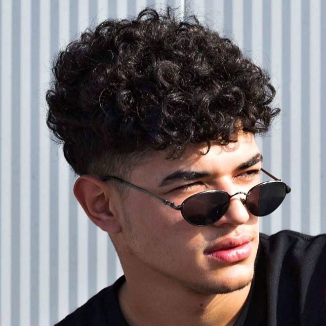Si el cabello es muy rizado, optar por una parte superior rizada desvanecida en forma cónica es una de las mejores opciones. Mantiene los lados limpios y ordenados mientras lleva toda la atención a la parte superior.
Calvo.
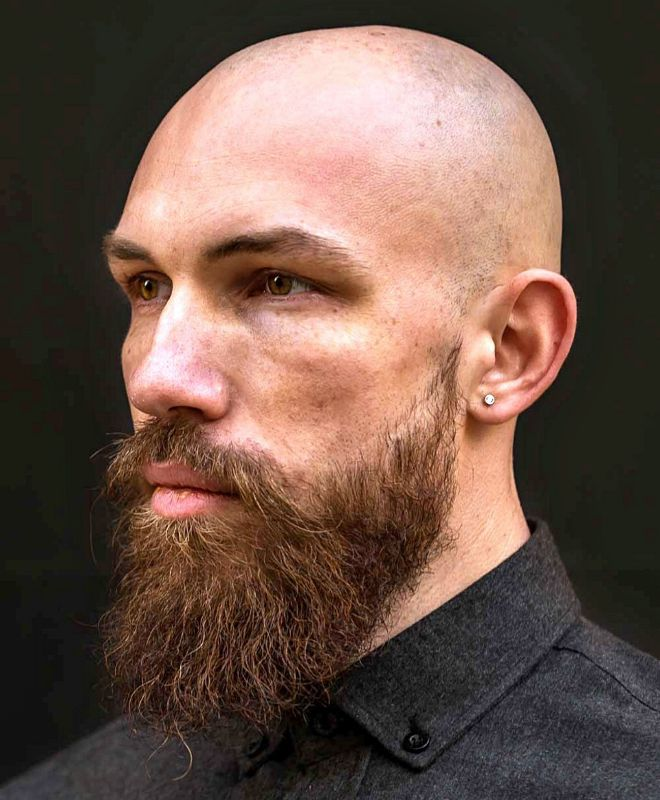Es el corte de pelo más corto y más cómodo de llevar; tan corto como que es calvo. Es evidente que afeitarse la cabeza es atrevido e impactante, pero también muy práctico. Eso sí, necesita un mantenimiento porque el pelo crece 0,5 mm al día; es decir, 1,5 cm al mes. Este corte, acompañado de una barba bien cuidada aporta mucha masculinidad.
Teñido.
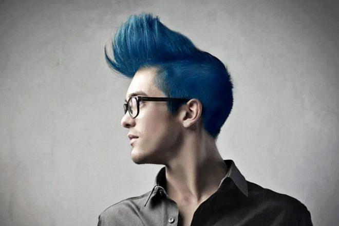Tanto con tupés extremos como cortos, largos, rizados, lisos... la tendencia de teñir el cabello en hombres va en aumento. Resulta moderno e impactante y lleva el sello indiscutible de la moda unida al K-Pop, el género musical sur coreano que arrasa entre los más jóvenes del planeta.
Recapado militar.
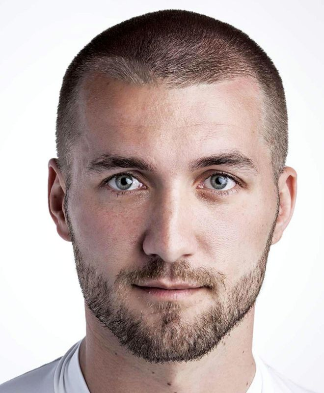De siempre, un corte rapado al estilo militar ha sido uno de los cortes de cabello más populares para hombres y niños. Y sigue siendo práctico, versátil y de máxima actualidad. No importa el tipo de cabello que se tenga, porque se adapta a cualquier edad y situación.
Pompadur desvanecido
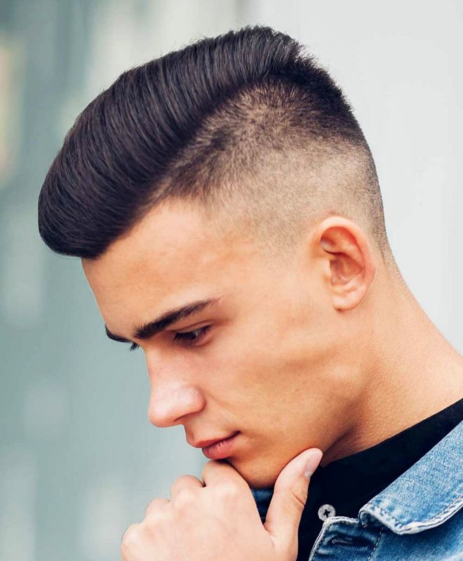Lleva varios años siendo uno de los cortes de cabello para hombres más populares. La razón principal es que se puede adaptar a la mayoría de las longitudes y texturas de cabello. Este corte se basa en una parte superior más larga, barrida hacia atrás y combinada con una espalda y costados más cortos. La variación gradual del copete asegura que haya suficiente estructura para acentuar el contraste. Y además se adapta a la mayoría de las formas de la cara.
Rubio helado.
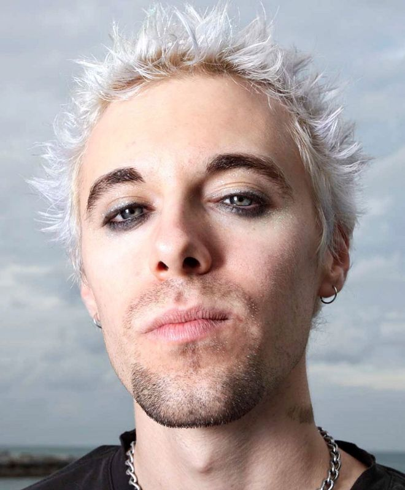Una melena corta, rubia helada y puntiaguda está claramente en la lista de lo que se lleva. Se adapta sobre todo a la estética más grunge y necesita cuidados y algún producto de peinado de fijación fuerte para mantener las puntas en su sitio.
Degrade con lineas.
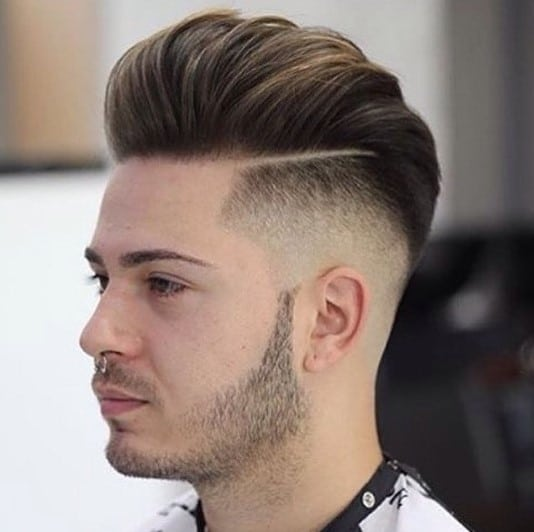Corte con degrade, dando estilo para hombres que les gusta hacerse notar, combinandolo con lineas para que sea mas llamativo. Muy popular en estos dias, donde cada vez se añaden mas diseños de lineas al degrade.
Degrade con barba.
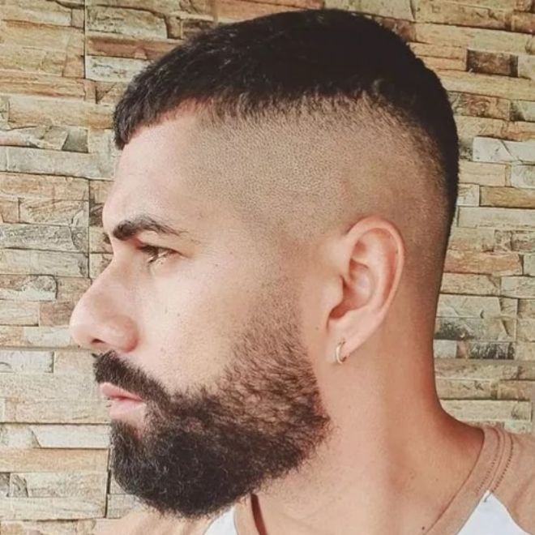El corte de pelo de Edgar, también conocido como corte de pelo takuache o César es uno de los estilos más populares entre los jóvenes. Sus características es la línea recta de flecos a lo largo de toda la frente. En la tendencia de este 2023, funciona muy bien con barba de distintas longitudes. El truco aquí es asegurarse de que el desvanecimiento del corte de pelo y el de la barba se alinean sin problemas. Y al hacerlo, puede crear la ilusión de una mandíbula más definida y pómulos angulosos